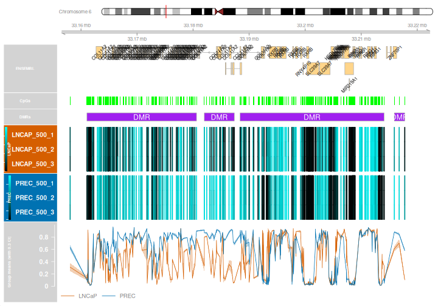

Differentially methylated regions with DMRcate
Last updated on 2026-11-11 | Edit this page
Estimated time: 55 minutes
Overview
Questions
- How do we identify and visualise differentially methylated regions?
- How do probe filtering, remapping and thresholds affect the regions we find?
Objectives
- Prepare M-values, a design matrix and a contrast for DMRcate.
- Identify, inspect and plot differentially methylated regions.
- Explore EPICv2 probe remapping.
Differential methylation analysis of regions (DMRs)
A differentially methylated region (DMR) contains neighbouring CpG sites with evidence of differential methylation. DMRcate combines spatial information with probe-wise statistics: a region is not simply a list of significant DMPs within a gene. Region boundaries also depend on probe coverage and analysis settings.
Prepare the inputs
Start from the normalised, filtered data saved in episode 2. This
object has already had cross-reactive probes removed and replicate
probes collapsed. Use M-values for modelling and beta values for
visualisation. DMRcate fits probe-wise models internally; it does not
use the topTable() results from episode 3 (DMPs) as
input.
R
library(minfi)
library(limma)
library(DMRcate)
library(IlluminaHumanMethylationEPICv2anno.20a1.hg38)
mSetFnFlt <- readRDS("data/processed/normalised-filtered.rds")
targets <- readRDS("data/processed/targets.rds")
mVals <- getM(mSetFnFlt)
bVals <- getBeta(mSetFnFlt)
sampleType <- droplevels(factor(targets$Type))
design <- model.matrix(~0 + sampleType)
colnames(design) <- levels(sampleType)
contMatrix <- makeContrasts(LNCaP_vs_PREC = LNCaP - PREC, levels = design)
contMatrix
OUTPUT
Contrasts
Levels LNCaP_vs_PREC
LNCaP 1
PREC -1This tests LNCaP minus PrEC: positive effects indicate higher methylation in LNCaP and negative effects indicate higher methylation in PrEC.
Annotate probes and identify regions
cpg.annotate() attaches genomic locations and calculates
statistics for the selected comparison. fdr defines the
threshold for individually significant CpGs used by DMRcate’s default
region thresholding.
We disable remapping for this baseline analysis because cross-reactive probes were removed earlier.
R
myAnnotation <- cpg.annotate(
object = mVals, datatype = "array", what = "M",
analysis.type = "differential", design = design,
contrasts = TRUE, cont.matrix = contMatrix,
coef = "LNCaP_vs_PREC", arraytype = "EPICv2",
epicv2Filter = "mean", epicv2Remap = FALSE, fdr = 0.05
)
R
str(myAnnotation)
OUTPUT
Formal class 'CpGannotated' [package "DMRcate"] with 2 slots
..@ ranges:Formal class 'GRanges' [package "GenomicRanges"] with 7 slots
.. .. ..@ seqnames :Formal class 'Rle' [package "S4Vectors"] with 4 slots
.. .. .. .. ..@ values : Factor w/ 22 levels "chr1","chr2",..: 1 2 3 4 5 6 7 8 9 10 ...
.. .. .. .. ..@ lengths : int [1:22] 82359 65065 49647 36388 44560 52721 45616 39087 31287 42426 ...
.. .. .. .. ..@ elementMetadata: NULL
.. .. .. .. ..@ metadata : list()
.. .. ..@ ranges :Formal class 'IRanges' [package "IRanges"] with 6 slots
.. .. .. .. ..@ start : int [1:852587] 191550 605420 777872 777913 817115 817316 827739 841597 860948 870161 ...
.. .. .. .. ..@ width : int [1:852587] 1 1 1 1 1 1 1 1 1 1 ...
.. .. .. .. ..@ NAMES : chr [1:852587] "chr1:191550" "chr1:605420" "chr1:777872" "chr1:777913" ...
.. .. .. .. ..@ elementType : chr "ANY"
.. .. .. .. ..@ elementMetadata: NULL
.. .. .. .. ..@ metadata : list()
.. .. ..@ strand :Formal class 'Rle' [package "S4Vectors"] with 4 slots
.. .. .. .. ..@ values : Factor w/ 3 levels "+","-","*": 3
.. .. .. .. ..@ lengths : int 852587
.. .. .. .. ..@ elementMetadata: NULL
.. .. .. .. ..@ metadata : list()
.. .. ..@ seqinfo :Formal class 'Seqinfo' [package "Seqinfo"] with 4 slots
.. .. .. .. ..@ seqnames : chr [1:22] "chr1" "chr2" "chr3" "chr4" ...
.. .. .. .. ..@ seqlengths : int [1:22] NA NA NA NA NA NA NA NA NA NA ...
.. .. .. .. ..@ is_circular: logi [1:22] NA NA NA NA NA NA ...
.. .. .. .. ..@ genome : chr [1:22] NA NA NA NA ...
.. .. ..@ elementMetadata:Formal class 'DFrame' [package "S4Vectors"] with 6 slots
.. .. .. .. ..@ rownames : NULL
.. .. .. .. ..@ nrows : int 852587
.. .. .. .. ..@ elementType : chr "ANY"
.. .. .. .. ..@ elementMetadata: NULL
.. .. .. .. ..@ metadata : list()
.. .. .. .. ..@ listData :List of 5
.. .. .. .. .. ..$ stat : num [1:852587] 3.053 17.708 -5.375 -1.893 0.549 ...
.. .. .. .. .. ..$ diff : num [1:852587] 0.06323 0.37757 -0.06784 -0.01895 0.00984 ...
.. .. .. .. .. ..$ rawpval: num [1:852587] 1.48e-02 5.61e-08 5.53e-04 9.30e-02 5.97e-01 ...
.. .. .. .. .. ..$ ind.fdr: num [1:852587] 2.39e-02 3.27e-07 1.17e-03 1.26e-01 6.47e-01 ...
.. .. .. .. .. ..$ is.sig : logi [1:852587] TRUE TRUE TRUE FALSE FALSE TRUE ...
.. .. ..@ elementType : chr "ANY"
.. .. ..@ metadata : list()
..@ betas : num [1:852587, 1:6] 0.694 0.746 0.829 0.885 0.216 ...
.. ..- attr(*, "dimnames")=List of 2
.. .. ..$ : chr [1:852587] "chr1:191550" "chr1:605420" "chr1:777872" "chr1:777913" ...
.. .. ..$ : chr [1:6] "LNCAP_500_1" "LNCAP_500_2" "LNCAP_500_3" "PREC_500_1" ...R
DMRs <- dmrcate(myAnnotation, lambda = 1000, C = 2, pcutoff = "fdr")
R
results.ranges <- extractRanges(DMRs, genome = "hg38")
OUTPUT
DMRcatedata not installed.
Full functionality, documentation, and loading of data might not be possible without installingOUTPUT
downloading 1 resourcesOUTPUT
retrieving 1 resourceOUTPUT
loading from cacheR
length(results.ranges)
OUTPUT
[1] 91122R
head(results.ranges)
OUTPUT
GRanges object with 6 ranges and 8 metadata columns:
seqnames ranges strand | no.cpgs min_smoothed_fdr
<Rle> <IRanges> <Rle> | <integer> <numeric>
[1] chr6 33188387-33214093 * | 263 0
[2] chr7 27142816-27176257 * | 232 0
[3] chr6 31651210-31671929 * | 219 0
[4] chr6 33311786-33324252 * | 208 0
[5] chr6 32068753-32091828 * | 172 0
[6] chr6 32834415-32848054 * | 148 0
Stouffer HMFDR Fisher maxdiff meandiff
<numeric> <numeric> <numeric> <numeric> <numeric>
[1] 0.00000e+00 7.56528e-09 0.00000e+00 -0.877030 0.0548098
[2] 0.00000e+00 1.53403e-09 0.00000e+00 0.961156 0.4494012
[3] 2.45764e-173 2.60020e-08 3.04765e-251 0.816047 0.0350544
[4] 8.36111e-234 1.25794e-07 0.00000e+00 0.622321 0.0974661
[5] 0.00000e+00 1.72539e-08 0.00000e+00 0.774299 -0.1674433
[6] 1.19367e-220 1.07991e-08 1.77879e-289 0.800936 0.0136151
overlapping.genes
<character>
[1] COL11A2, RXRB, RNY4P..
[2] HOXA3, AC004080.6, H..
[3] BAG6, APOM, C6orf47,..
[4] TAPBP, ZBTB22, DAXX,..
[5] TNXB, RNA5SP206
[6] AL669918.1, TAP2, PS..
-------
seqinfo: 22 sequences from an unspecified genome; no seqlengths-
lambda = 1000sets the smoothing bandwidth and separates regions at gaps of at least 1,000 bases between significant CpGs. -
C = 2gives a Gaussian kernel standard deviation of 500 bases. -
pcutoff = "fdr"uses the individually significant CpGs to index the region threshold. This is the recommended default. A numeric cutoff, such aspcutoff = 0.05, instead thresholds kernel-smoothed FDR values directly and can be more permissive; it does not guarantee a 5% region-level FDR.
Examples of changing the individual-CpG FDR threshold and the region-calling cutoff:
R
# Stricter individual-CpG FDR threshold
annotation.strict <- changeFDR(myAnnotation, 1e-10)
DMRs.strict <- dmrcate(annotation.strict, lambda = 1000, C = 2)
ranges.strict <- extractRanges(DMRs.strict, genome = "hg38")
c(baseline = length(results.ranges), stricter = length(ranges.strict))
# Numeric cutoff on kernel-smoothed FDR values; can be more permissive
DMRs.numeric <- dmrcate(myAnnotation, lambda = 1000, C = 2, pcutoff = 0.05)
Interpret and visualise regions
Inspect DMRs
Coordinates: chromosome, start and end positions.
no.cpgs: number of CpG sites contributing to the region.
Stouffer: a combined regional significance measure; smaller
values indicate stronger evidence. meandiff: the average
beta-value difference across the region. maxdiff: the
largest absolute beta-value difference within the region, retaining its
direction.
Positive differences indicate higher methylation in LNCaP for our contrast. A mean difference can hide CpGs changing in opposite directions, so inspect the plot as well as the summary.
R
dmrTable <- as.data.frame(results.ranges)
head(dmrTable)
OUTPUT
seqnames start end width strand no.cpgs min_smoothed_fdr
1 chr6 33188387 33214093 25707 * 263 0
2 chr7 27142816 27176257 33442 * 232 0
3 chr6 31651210 31671929 20720 * 219 0
4 chr6 33311786 33324252 12467 * 208 0
5 chr6 32068753 32091828 23076 * 172 0
6 chr6 32834415 32848054 13640 * 148 0
Stouffer HMFDR Fisher maxdiff meandiff
1 0.000000e+00 7.565283e-09 0.000000e+00 -0.8770301 0.05480977
2 0.000000e+00 1.534029e-09 0.000000e+00 0.9611558 0.44940122
3 2.457638e-173 2.600202e-08 3.047654e-251 0.8160471 0.03505441
4 8.361109e-234 1.257936e-07 0.000000e+00 0.6223214 0.09746613
5 0.000000e+00 1.725387e-08 0.000000e+00 0.7742990 -0.16744333
6 1.193673e-220 1.079909e-08 1.778789e-289 0.8009365 0.01361510
overlapping.genes
1 COL11A2, RXRB, RNY4P10, SLC39A7, HSD17B8, MIR219A1, RING1
2 HOXA3, AC004080.6, HOXA-AS3, HOXA5, HOXA6, AC004080.5, HOXA7, AC004080.4, HOXA9, AC004080.3, HOXA10-AS, MIR196B, HOXA10
3 BAG6, APOM, C6orf47, C6orf47-AS1, GPANK1, Y_RNA, CSNK2B, AL662899.2, LY6G5B
4 TAPBP, ZBTB22, DAXX, SMIM40, SMIM40
5 TNXB, RNA5SP206
6 AL669918.1, TAP2, PSMB8, PSMB8-AS1, PSMB9, TAP1DMR.plot() adds gene annotations from Ensembl. Following
the 2026 Ensembl transition, use an archive for this legacy BioMart
service.
R
library(biomaRt)
ensembl <- methods::new(
"Mart",
biomart = "ENSEMBL_MART_ENSEMBL",
vschema = "default",
host = "https://sep2025.archive.ensembl.org/biomart/martservice"
)
ensembl <- biomaRt::useDataset(
dataset = "hsapiens_gene_ensembl", mart = ensembl
)
DMR.plot <- DMRcate::DMR.plot
plot.env <- new.env(parent = environment(DMR.plot))
plot.env$useEnsembl <- local({
mart <- ensembl
function(...) mart
})
environment(DMR.plot) <- plot.env
R
groups <- c(LNCaP = "#D55E00", PREC = "#0072B2")
cols <- groups[as.character(sampleType)]
par(mfrow = c(1, 1))
DMR.plot(
ranges = results.ranges, dmr = 1, CpGs = bVals,
phen.col = cols, what = "Beta",
arraytype = "EPICv2", genome = "hg38"
)
WARNING
Warning in getMethods(coerce, table = TRUE): 'getMethods' is deprecated.
Use 'getMethodsForDispatch(f, TRUE)' instead.
See help("Deprecated")
Warning in getMethods(coerce, table = TRUE): 'getMethods' is deprecated.
Use 'getMethodsForDispatch(f, TRUE)' instead.
See help("Deprecated")
Warning in getMethods(coerce, table = TRUE): 'getMethods' is deprecated.
Use 'getMethodsForDispatch(f, TRUE)' instead.
See help("Deprecated")
dmr = 1 selects the first returned region;
dmr = 2 selects the second, etc. Check the regional
statistics before describing one as the strongest result. Look for
consistent group separation across CpGs, outlying samples and gaps in
probe coverage.
R
dir.create("data/output", recursive = TRUE, showWarnings = FALSE)
saveRDS(results.ranges, "data/output/DMRs_epicv2_LNCaP_vs_PREC.rds")
write.csv(dmrTable, "data/output/DMRs_epicv2_LNCaP_vs_PREC.csv",
row.names = FALSE)
Further learning: remapping EPICv2 probes
Some EPICv2 probes preferentially bind to a genomic location other than their original annotated target. DMRcate can use evidence from the extended EPICv2 manifest to assign eligible probes to these alternative locations before calling regions. Remapping aims to improve positional accuracy and DMR analysis by assigning eligible probes to better-supported genomic locations. It can reveal previously missed regions or change which CpGs support an existing region and where its boundaries fall.
To explore this approach, start from quality-controlled data
before cross-reactive probes are removed and replicate probes
are collapsed, retaining full EPICv2 probe IDs. In the DMRcate
workflow, rmSNPandCH(..., rmcrosshyb = FALSE) retains
cross-hybridising probes, and
cpg.annotate(..., arraytype = "EPICv2", epicv2Remap = TRUE)
enables remapping; replicate handling is controlled separately with
epicv2Filter. These are argument examples, not a complete
replacement for the QC workflow.
For a full worked example covering input preparation, remapping, matched comparisons and visualisation, see section 6.2 of the Clark Lab EPICv2 tutorial.
Consult the DMRcate reference manual for the arguments supported by your package version. Compare analyses using the same design and thresholds, and inspect the probe locations supporting any changed regions. Improved mapping is the aim; an increase in the number of DMRs alone does not demonstrate improved accuracy.
Interpret the region analysis
- For the contrast
LNCaP_vs_PREC, what does a positivemeandiffindicate? - What should you check if a candidate region has a large mean beta difference?
- Higher average methylation in LNCaP than PrEC across the region.
- Inspect regional evidence, individual CpG directions, sample variation, probe coverage and mapping. A large effect alone does not establish statistical significance or biological generalisability.
- DMRcate combines probe-wise statistics with genomic proximity to identify regions.
- Use M-values for testing, beta values for interpretation and a consistent array type and genome build.
- CpG FDR thresholds and numeric kernel-smoothed cutoffs have different meanings.
- Inspect regional statistics and sample-level patterns alongside gene annotations.
- EPICv2 remapping aims to improve positional accuracy and DMR detection by assigning eligible probes to better-supported genomic locations; these probes must be retained before cross-reactivity filtering.